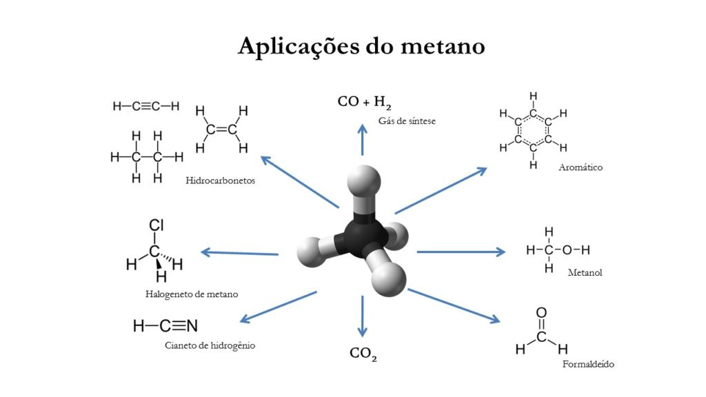

O que você sabe sobre o Metano?
Se prepare para responder este quiz para testar o seu conhecimento sobre este gás

História do Metano
O gás metano foi descoberto em 1776 pelo químico italiano Alessandro Volta, que o encontrou no Lago Maior e o chamou de "ar inflamável dos pântanos". Em 1778, Volta conseguiu isolar o gás e iniciou estudos sobre suas propriedades.
O que é
O metano é um composto orgânico e o primeiro membro da série dos alcanos. Pode originar diversos derivados, sendo o gás metano o principal representante.
Também é um hidrocarboneto, o menor e mais simples de sua categoria. Trata-se de uma molécula orgânica composta por apenas um átomo de carbono ligado a quatro átomos de hidrogênio. Sua fórmula é CH₄.
Onde encontrar
O metano pode ser encontrado tanto de forma natural quanto industrial.
Nas formas naturais, contamos com sua presença em:
- Pântanos e alagados: O metano é conhecido como “gás dos pântanos” porque é produzido por bactérias metanogênicas em ambientes úmidos e anaeróbicos.
- Processo digestivo de animais ruminantes: Bovinos, por exemplo, liberam grandes quantidades de metano durante a digestão.
- Decomposição de matéria orgânica: Em ambientes sem oxigênio, como solos encharcados ou sedimentos, bactérias transformam resíduos em metano.
- Manto terrestre e depósitos de gás natural: O metano está presente em formações geológicas profundas.
- Vulcões de lama e falhas geológicas: Também podem liberar metano de origem abiótica.
Já nas formas industriais e urbanas, podemos ter em:
- Gás natural: O metano é o principal componente do gás natural, usado como combustível em residências e indústrias, tanto para aquecimento quanto na geração de energia e produção de materiais como plásticos e fertilizantes.
- Aterros sanitários: A decomposição de lixo orgânico gera metano, que pode ser captado e usado como biogás.
- Usinas de biogás: Aproveitam resíduos orgânicos para produzir metano como fonte de energia renovável.